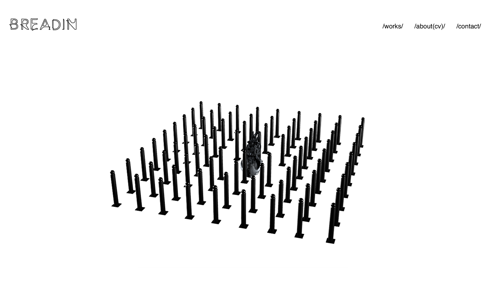
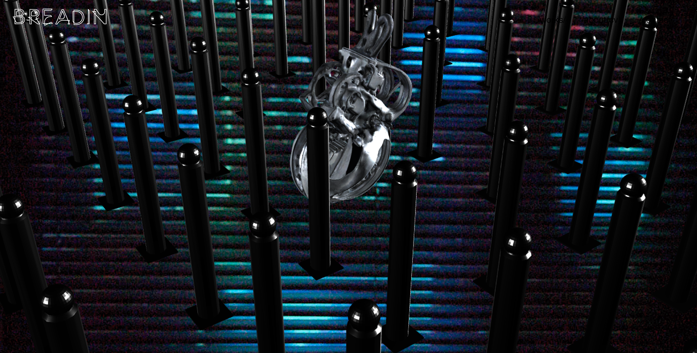
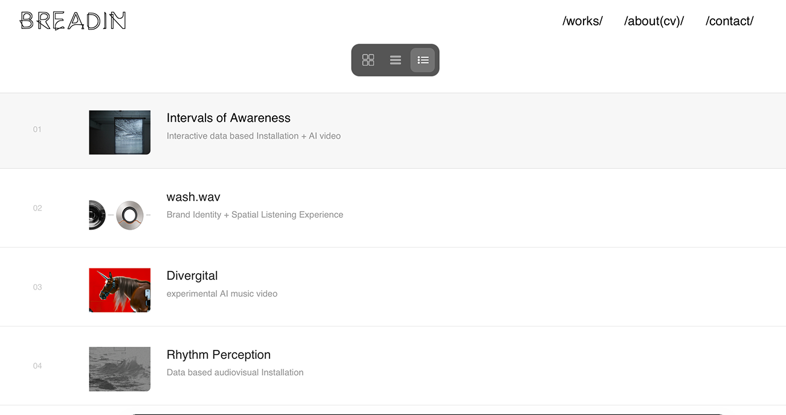
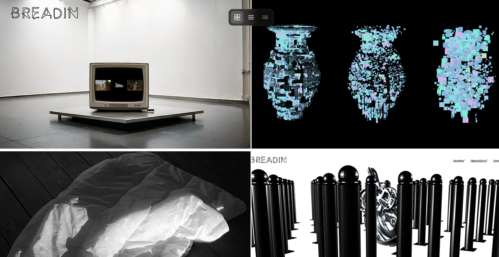

A personal portfolio website designed and developed to present my work through a minimal visual system, responsive layout, and interactive 3D homepage experience.
Web Design / Front-end Development / Interaction Design / Responsive Layout
Website / Interactive 3D Object / Mobile Interface / Portfolio System
HTML / CSS / JavaScript / Three.js / ChatGPT-assisted Debugging
This website was designed as a personal archive and curated portfolio, balancing experimental media work with a clear project-based structure. The visual system is intentionally minimal, allowing each project to remain the main focus.
The homepage features an interactive 3D object that responds to mouse input. Users can scroll to zoom in and out, and click-drag to rotate the object and adjust its orientation.

The works page includes multiple viewing modes, allowing users to browse projects through different levels of visual density and information. Users can switch between grid, compact, and list-based views depending on how they want to explore the archive.


A custom mobile version was designed to ensure a smooth experience across devices, including touch-based interactions, responsive layout, and a full-screen hamburger menu.